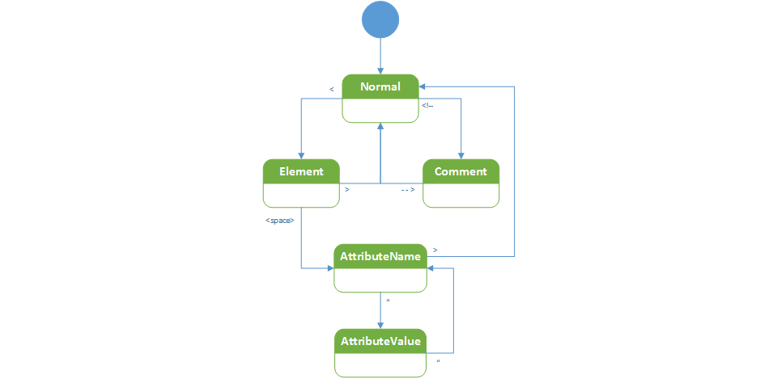

Qt XML Syntax Highlighter
Table of Contents
Introduction
Qt provides a base class that can be used for highlighting text in QTextDocument instances as displayed in various Qt controls. This post shows how this can be used to highlight XML text.
The documentation for QTextDocument can be found here.
This example follows the following state transitions, which is probably not optimal, but expresses the states reasonably closely, enough to get a functioning syntax highlighter. As this blog is mainly for my own note taking, I weill leave it to the reader to improve it :)

Here is the class declaration:
1: // An XML syntax highlighter 2: // 3: class XMLHighlighter : public QSyntaxHighlighter 4: { 5: Q_OBJECT 6: 7: public: 8: // ctor 9: XMLHighlighter(QTextDocument *parent = 0); 10: 11: protected: 12: // An overridden highlight method for highlighting 13: // patterms based on the rules defined in this class 14: // 15: void highlightBlock(const QString &text) Q_DECL_OVERRIDE; 16: 17: private: 18: 19: QTextCharFormat validElementFormat; // The format for XML elements 20: QTextCharFormat attributeNameFormat; // The format for XML attribute names 21: QTextCharFormat attributeValueFormat; // The format for XML attribute values 22: QTextCharFormat commentFormat; // formatting for XML comments 23: };
And the method definitions:
24: // XML syntax highlighter 25: // 26: 27: // default ctor 28: // 29: XMLHighlighter::XMLHighlighter(QTextDocument *parent) 30: :QSyntaxHighlighter(parent) 31: { 32: attributeValueFormat.setForeground(Qt::darkGreen); 33: attributeValueFormat.setFontWeight(QFont::Normal); 34: 35: validElementFormat.setForeground(Qt::darkBlue); 36: validElementFormat.setFontWeight(QFont::Bold); 37: 38: attributeNameFormat.setForeground(Qt::darkRed); 39: attributeNameFormat.setFontWeight(QFont::Bold); 40: 41: commentFormat.setForeground(Qt::gray); 42: commentFormat.setFontItalic(true); 43: } 44: 45: // An overridden highlight method for highlighting 46: // patterms based on the rules defined in this class 47: // 48: void XMLHighlighter::highlightBlock(const QString &text) 49: { 50: 51: enum { 52: NormalState = -1, 53: Element, 54: AttributeName, 55: AttributeEquals, 56: AttributeValue, 57: Comment 58: }; 59: 60: int state = previousBlockState(); 61: int offset = 0; 62: 63: for (int i = 0; i < text.length(); ++i) 64: { 65: switch(state) 66: { 67: case Element: 68: 69: if (text.mid(i, 1) == ">") 70: { 71: state = NormalState; 72: setFormat(offset, i - offset + 1, validElementFormat); 73: } 74: 75: if (text.mid(i, 1) == " ") 76: { 77: state = AttributeName; 78: setFormat(offset, i - offset, validElementFormat); 79: offset = i + 1; 80: } 81: 82: break; 83: case AttributeName: 84: 85: if (text.mid(i, 1) == "=") 86: { 87: state = AttributeEquals; 88: setFormat(offset, i - offset, attributeNameFormat); 89: offset = i; 90: } 91: 92: if (text.mid(i, 1) == ">") 93: { 94: state = NormalState; 95: setFormat(offset, i - offset + 1, validElementFormat); 96: } 97: 98: break; 99: case AttributeEquals: 100: 101: if (text.mid(i, 1) == "\"") 102: { 103: state = AttributeValue; 104: setFormat(offset, i - offset, attributeNameFormat); 105: offset = i; 106: } 107: 108: break; 109: case AttributeValue: 110: 111: if (text.mid(i, 1) == "\"") 112: { 113: state = AttributeName; 114: setFormat(offset, i - offset + 1, attributeValueFormat); 115: offset = i + 1; 116: } 117: 118: break; 119: case Comment: 120: 121: if (text.mid(i, 3) == "-->") 122: { 123: state = NormalState; 124: setFormat(offset, i - offset + 3, commentFormat); 125: } 126: default: 127: 128: if (text.mid(i, 4) == ">!--") 129: { 130: offset = i; 131: state = Comment; 132: } 133: else if (text.mid(i, 1) == ">") 134: { 135: offset = i; 136: state = Element; 137: } 138: 139: break; 140: } 141: } 142: }